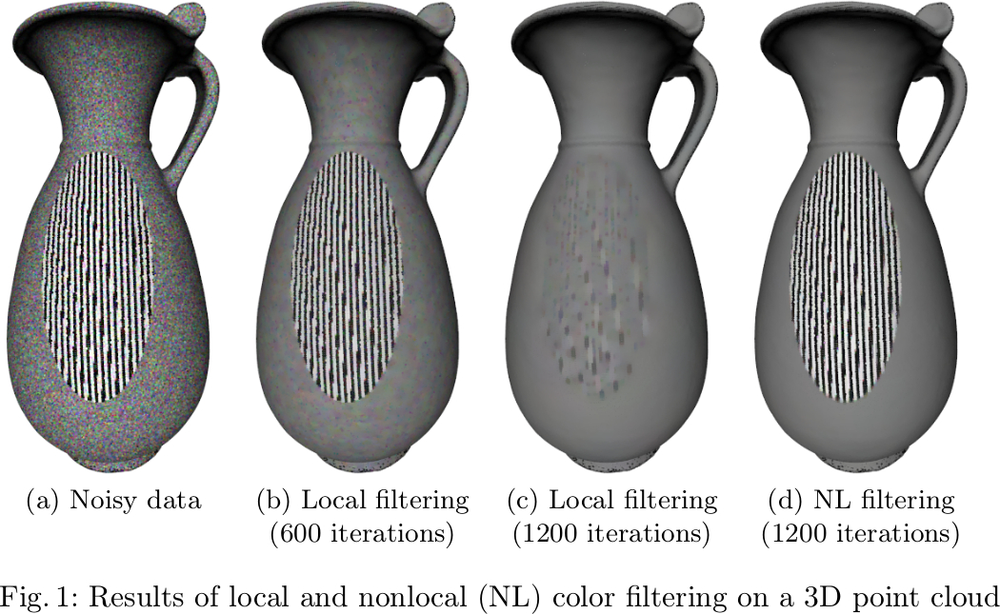
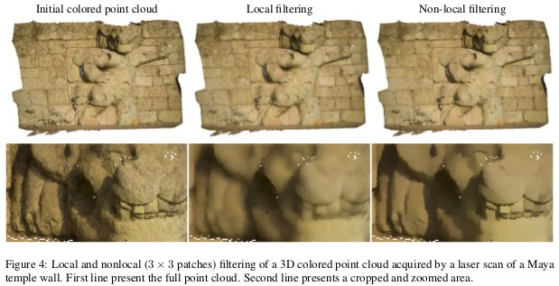

François Lozes
Post Doctorat - GREYC Image Team
Post Doctorat - GREYC Image Team
Overview
I'm currently a computer science Post Doctorat at the GREYC laboratory. I defended my thesis in 2015 [PDF]. My thesis director, was Abder Elmoataz. I work at GREYC laborary in image team and my Ph.D thesis subject was ``the processing of discrete data on surfaces and manifold to the application of 3D cultural heritage''. These discrete data are information like coordinates, colors, temperatures or normals, which are available on images, 3D meshes or even 3D points clouds. We represent these data as valued functions on graphs. We use the Partial differential Equations (PdEs) to transcribe easily from continuous optimization problem to discrete optimization problems on graphs. Articles published show the usefulness of this framework to solve several tasks like filtering, simplification, inpainting, segmentation, on several cultural heritage objects.
Affiliations
 |
International journals
Nonlocal PDEs on Graphs: From Tug-of-War Games to Unified Interpolation on Images and Point Clouds.
A. Elmoataz, F. Lozes, M. Toutain
[PDF] [BIBTEX]
A. Elmoataz, F. Lozes, M. Toutain
[PDF] [BIBTEX]
Springer Journal of Mathematical Imaging and Vision, 2017
In this paper, we introduce a new general class of partial difference operators on graphs, which interpolate between the nonlocal ∞-Laplacian, the Laplacian, and a family of discrete gradient operators. In this context, we investigate an associated Dirichlet problem for this general class of operators and prove the existence and uniqueness of respective solutions. We show that a certain partial difference equation based on this class of operators recovers many variants of a stochastic game known as 'Tug-of-War' and extends them to a nonlocal setting. Furthermore, we discuss a connection with certain nonlocal partial differential equations. Finally, we propose to use this class of operators as general framework to solve many interpolation problems in a unified manner as arising, e.g., in image and point cloud processing. |
Morphological PDEs on Graphs for Image Processing on Surfaces and Point Clouds.
A. Elmoataz, F. Lozes, H. Talbot
[PDF] [BIBTEX]
A. Elmoataz, F. Lozes, H. Talbot
[PDF] [BIBTEX]
ISPRS International Journal of Geo-Information, 2016
Partial Differential Equations (PDEs)-based morphology offers a wide range of continuous operators to address various image processing problems. Most of these operators are formulated as Hamilton–Jacobi equations or curve evolution level set and morphological flows. In our previous works, we have proposed a simple method to solve PDEs on point clouds using the framework of PdEs (Partial difference Equations) on graphs. In this paper, we propose to apply a large class of morphological-based operators on graphs for processing raw 3D point clouds and extend their applications for the processing of colored point clouds of geo-informatics 3D data. Through illustrations, we show that this simple framework can be used in the resolution of many applications for geo-informatics purposes. |
Non-local Discrete ∞-Poisson and Hamilton Jacobi Equations. From Stochastic Game to Generalized Distances on Images, Meshes, and Point Clouds.
M. Toutain, A. Elmoataz, F. Lozes, A. Mansouri
[PDF] [BIBTEX]
M. Toutain, A. Elmoataz, F. Lozes, A. Mansouri
[PDF] [BIBTEX]
Springer Journal of Mathematical Imaging and Vision, 2015
In this paper we propose an adaptation of the ∞-Poisson equation on weighted graphs, and propose a finer expression of the ∞-Laplace operator with gradient terms on weighted graphs, by making the link with the biased version of the tug-of-war game. By using this formulation, we propose a hybrid ∞-Poisson Hamilton-Jacobi equation, and we show the link between this version of the ∞-Poisson equation and the adaptation of the eikonal equation on weighted graphs. Our motivation is to use this extension to compute distances on any discrete data that can be represented as a weighted graph. Through experiments and illustrations, we show that this formulation can be used in the resolution of many applications in image, 3D point clouds, and high dimensional data processing using a single framework. |
Graph Signal Processing for 3-D Color Point Clouds : Opportunities for Cultural Heritage.
F. Lozes, A. Elmoataz, O. Lézoray
[PDF] [BIBTEX]
F. Lozes, A. Elmoataz, O. Lézoray
[PDF] [BIBTEX]
IEEE Signal Processing Magazine, 2015
With the advance of three-dimensional (3-D) scanning technology, the cultural heritage community is increasingly interested in 3-D scans of cultural objects such as antiques, artifacts, and heritage sites. Digitization of these objects is commonly aimed at heritage preservation. Since 3-D color scanning has the potential to tackle a variety of traditional documentation challenges, the use of signal processing techniques on such data can be expected to yield new applications that are feasible for the first time with the aid of captured 3-D color point clouds. Our contributions are twofold. First, we propose a simple method to solve partial differential equations (PDEs) on point clouds using the framework of partial difference equations (PdEs) on graphs. Second, we survey several applications of 3-D color point cloud processing on real examples for which signal processing researchers can develop tools that can be valuable for museum specialists. The results of these methods have been reviewed by experts in the arts and found promising. |
Partial difference operators on weighted graphs for image processing on surfaces and point clouds.
F. Lozes, A. Elmoataz, O. Lézoray
[PDF] [BIBTEX]
F. Lozes, A. Elmoataz, O. Lézoray
[PDF] [BIBTEX]
IEEE Transactions on Image Processing, 2014
PDEs and variational methods for image processing on Euclidean domains spaces are very well established because they permit to solve a large range of real computer vision problems. With the recent advent of many 3D sensors, there is a growing interest in transposing and solving PDEs on surfaces and point clouds. In this paper, we propose a simple method to solve such PDEs using the framework of Partial difference Equations (PdEs) on graphs. This latter approach enables us to transcribe, for surfaces and point clouds, many models and algorithms designed for image processing. To illustrate our proposal, three problems are considered: p-Laplacian restoration and inpainting, PDEs Mathematical Morphology, and active contours segmentation. This work was funded under a Ph.D. grant of the regional council of Lower-Normandy. |
International conferences
PDEs on Graphs for Image Reconstruction on Positron Emission Tomography.
A. Boudjela, A. Elmoataz, F. Lozes, Z. Messali
[PDF] [BIBTEX]
A. Boudjela, A. Elmoataz, F. Lozes, Z. Messali
[PDF] [BIBTEX]
International Conference on Image and Signal Processing (ICISP), 2018
A better quality of an image can be achieved through iterative image reconstruction for positron emission tomography (PET) as it employs spatial regularization that minimizes the difference of image intensity among adjacent pixels. In our previous works, we have proposed a simple method to solve PDEs on general images using the framework of PdEs (Partial difference Equations) on graphs. In this paper, we propose to apply morphological-based operators on graphs for processing of 2D PET images. We apply this approach for to remove noise from the raw projections data. The quality measurements and visual inspections show a significant improvement in image quality compared to conventional Algebraic Reconstruction Technique (ART). |
Nonlocal Difference Operators on Graphs for Interpolation on Point Clouds.
F. Lozes, A. Elmoataz
[PDF] [BIBTEX]
F. Lozes, A. Elmoataz
[PDF] [BIBTEX]
International Symposium on Mathematical Morphology and Its Applications to Signal and Image Processing (ISMM), 2017
In this paper we introduce a new general class of partial difference operators on graphs, which interpolate between the nonlocal∞-Laplacian, the Laplacian, and a family of discrete gradient operators. In this context we investigate an associated Dirichlet problem for this general class of operators and prove the existence and uniqueness of respective solutions. We propose to use this class of operators as general framework to solve many interpolation problems in a unified manner as arising, e.g., in image and point cloud processing. |
Morphological PDEs on Graphs for analyzing Unorganized Point Clouds in 3D and higher.
A. Elmoataz, F. Lozes
[PDF] [BIBTEX]
A. Elmoataz, F. Lozes
[PDF] [BIBTEX]
International Conference on Scientific Computation and Differential Equations (SciCADE), 2017
Partial Differential Equations (PDEs)-based morphology offers a wide range of continuous operators to address various image processing problems. Most of these operators are formulated as Hamilton–Jacobi equations or curve evolution level set and morphological flows. In our previous works, we have proposed a simple method to solve PDEs on point clouds using the framework of PdEs (Partial difference Equations) on graphs. In this talk, we propose to apply a large class of morphological-based operators on graphs for processing raw point clouds in 3d and higher. |
Normalized p-Laplacian on Graphs : From Tug-of-War Games to Interpolation on Images and Point Clouds.
A. Elmoataz, F. Lozes
[PDF] [BIBTEX]
A. Elmoataz, F. Lozes
[PDF] [BIBTEX]
Graph Signal Processing Workshop, 2016
In this presentation, we propose an adaptation and generalization of the game p-Laplacian on weighted graphs of arbitrary topology using the framework of Partial difference Equations (PdEs). This adaptation leads to a new class of p-Laplacian on graph in non divergence form which interpolates between nonlocal 1-Laplacian, nonlocal ∞-Laplacian and nonlocal 2-Laplacian, on graphs. We show the connections of this operator with local and nonlocal continuous normalized p-Laplacian. Then we consider the Dirichlet problem associated with theses operators and we prove the existence and the uniqueness of the solution. We show that our proposed operator is an extension on weighted graphs of the well known numerical approximation of Oberman of the 1-Laplacian and ∞-Laplacian . We also show the connection with local and nonlocal Tug-of-War games. Finally, we propose to use the game p-Laplacian on graph as a framework to solve many interpolation problems on graph with applications in image processing and machine learning. |
Morphological PDEs on graphs for analyzing unorganized data in 3D and higher.
A. Elmoataz, F. Lozes, H. Talbot
[PDF] [BIBTEX]
A. Elmoataz, F. Lozes, H. Talbot
[PDF] [BIBTEX]
IEEE Global Conference on Signal and Information Processing (GlobalSIP), Graph Signal Processing Symposium, 2016
Mathematical morphology operators can be defined in terms of algebraic (discrete) sets or as PDEs (Partial Differential Equations). In our previous works, we have proposed a simple method to solve PDEs on dataset using the framework PdEs (Partial difference Equations) on graphs. We formulated mathematical morphology operators (dilation and erosion) which can be used to perform several morphological processes on weighted graphs, such as opening, closing, reconstruction and leveling. In this paper, we adopt the PdE method and we focus on some PDEs-based continuous morphological operators on Euclidean domains : Dilation/Erosion, Eikonal Equation. One strong benefit of our approach is that it enables to process any information associated to raw dataset. |
Solving Minimal Surface Problems on Surfaces and Point Clouds.
D. Tenbrinck, A. Elmoataz, F. Lozes
[PDF] [BIBTEX]
D. Tenbrinck, A. Elmoataz, F. Lozes
[PDF] [BIBTEX]
IEEE Scale Space and Variational Methods in Computer Vision (SSVM), 2015
|  | Minimal surface problems play not only an important role in physics or biology but also in mathematical signal and image processing. Although the computation of respective solutions is well-investigated in the setting of discrete images, only little attention has been payed to data of more complicated topology, e.g., surfaces represented as meshes or point clouds. In this work we introduce a novel family of discrete total variation seminorms for weighted graphs based on the upwind gradient and give an efficient minimization algorithm to perform total variation denoising. Furthermore, we demonstrate how to utilize the latter algorithm to uniquely solve minimal surface problems on graphs in a unified framework. To show the universal applicability of this approach, we illustrate results from filtering and segmentation of point cloud data. |
Nonlocal Segmentation of Point Clouds with Graphs.
F. Lozes, M. Hidane, A. Elmoataz, O. Lézoray
[PDF] [BIBTEX]
F. Lozes, M. Hidane, A. Elmoataz, O. Lézoray
[PDF] [BIBTEX]
IEEE Global Conference on Signal and Information Processing (GlobalSIP), Graph Signal Processing Symposium, 2013
 |
In this paper, we propose a nonlocal approach based on graphs to segment raw point clouds as a particular class of graph signals. Using the framework of Partial difference Equations (PdEs), we propose a transcription on graphs of recent continuous global active contours along with a minimization algorithm. To apply it on point clouds, we show how to represent a point cloud as a graph weighted with patches. Experiments show the benefits of the approach on raw colored point clouds obtained from real scans. This work was funded under a Ph.D. grant of the regional council of Lower-Normandy. |
Morphological PDEs on Graphs for Filtering and Inpainting of Point Clouds.
F. Lozes, A. Elmoataz, O. Lézoray
[PDF] [BIBTEX]
F. Lozes, A. Elmoataz, O. Lézoray
[PDF] [BIBTEX]
IEEE International Symposium on Image and Signal Processing and Analysis, 2013
In this paper, we propose an adaptation of morphological Partial Differential Equations (PDEs) on graphs using the framework of Partial difference Equations (PdEs). This enables to define adaptive morphological operators on graphs. We then show how these operators can be used for interpolation and filtering of raw point clouds. To enable a patch-based processing of point clouds, we also show how a weighted graph based on patches can be associated with a point cloud. Finally, we present applications in cultural heritage. This work was funded under a Ph.D. grant of the regional council of Lower-Normandy. |
IEEE International Conference on Pattern Recognition, pp. 1968-1971, 2012
|  | In this paper we present a methodology for nonlocal processing of 3D colored point clouds using regularization of functions defined on weighted graphs. To adapt it to nonlocal processing of 3D data, a new definition of patches for 3D point clouds is introduced and used for nonlocal filtering of 3D data such as colored point~clouds. Results illustrate the benefits of our nonlocal approach to filter noisy 3D colored point clouds (either on spatial or colorimetric information). This work was funded under a Ph.D. grant of the regional council of Lower-Normandy. |
National conferences
EDPs morphologique sur graphes pour le Filtrage et l'Inpainting d’images sur nuages de points 3D.
F. Lozes, A. Elmoataz
[PDF] [BIBTEX]
F. Lozes, A. Elmoataz
[PDF] [BIBTEX]
RFIA, 2016
In this paper, we propose an adaptation of morphological Partial Differential Equations (PDEs) on graphs using the framework of Partial difference Equations (PdEs). This enables to define adaptive morphological operators on graphs. We then show how these operators can be used for interpolation and filtering of raw 3D point clouds. To enable a patch-based processing of point clouds, we also show how a weighted graph based on patches can be associated with a point cloud. Finally, we present applications in cultural heritage. |
Traitement non-local de nuages de points colorés 3D : opportunités pour l'héritage culturel.
F. Lozes, A. Elmoataz, O. Lézoray
[PDF] [BIBTEX]
F. Lozes, A. Elmoataz, O. Lézoray
[PDF] [BIBTEX]
GRETSI, 2015
With the advance of 3D scanning technology, the cultural heritage community is increasingly interested in 3D scans of cultural objects such as antiques, artifacts and heritage sites. Digitization of these objects is commonly aimed at heritage preservation. Our contributions are twofold. First, we propose a simple method to solve PDEs (Partial Differential Equations) on point clouds using the framework of PdEs (Partial difference Equations) on graphs. Second, we survey several applications of 3D color point cloud processing on real examples. |
GRETSI, 2013
 |
We propose a method to process colored 3D point clouds. This method is based on several keys points: the use of graphs to represent 3D data, a formalization of the processing with Partial difference Equations (PdEs) on graphs, and the introduction of patches on 3D point clouds. We present exemples of denoising of either coordinate values or color values of point clouds obtained with 3D scanners. This work was funded under a Ph.D. grant of the regional council of Lower-Normandy. |
Traitement d’images sur surfaces et variétés : Applications à la mise en valeur du patrimoine culturel 3D.
F. Lozes, A. Elmoataz, O. Lézoray
[PDF] [BIBTEX]
F. Lozes, A. Elmoataz, O. Lézoray
[PDF] [BIBTEX]
RFIA (workshop), 2012
Avec la multiplication de données complexes définies sur des espaces Euclidiens réguliers ou Euclidiens irréguliers (telles des surfaces ou des images sur des surfaces), il devient nécessaire de transposer les techniques usuelles de traitement d'images et de signaux pour de telles données. En particulier, on constate un intérêt croissant pour transposer des méthodes variationnelles et d'EDPs pour traiter des surfaces ou des données définis sur des surfaces. Dans nos travaux, nous nous intéressons également au traitement des images de points et de maillages de monuments 3D. |
Le GREYC organise le 2 juillet 2018 la Journée Culture Numérique 2018 à Cherbourg-En-Cotentin : https://jncn2018.greyc.fr/.
Contact
| Mailbox: |
| UCBN, GREYC - CNRS UMR 6072 |
| Image Team - ENSICAEN - 6 bd maréchal Juin |
| F-14050 Caen CEDEX 4, France |
| Phone: +33(0)231452921 |
| Email: francois.lozes@unicaen.fr |